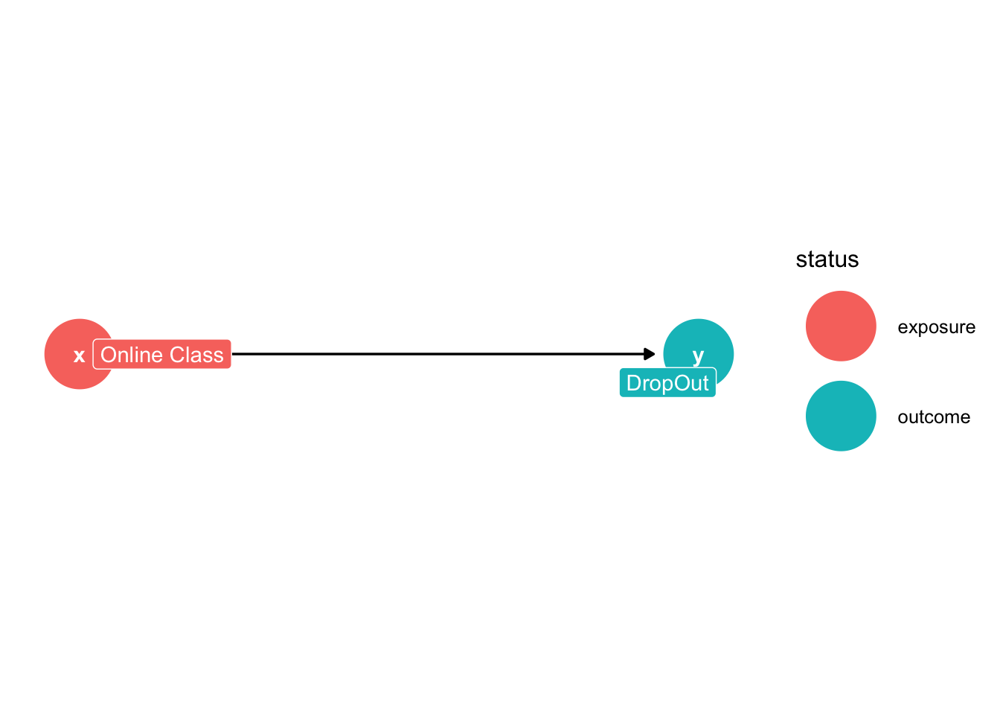
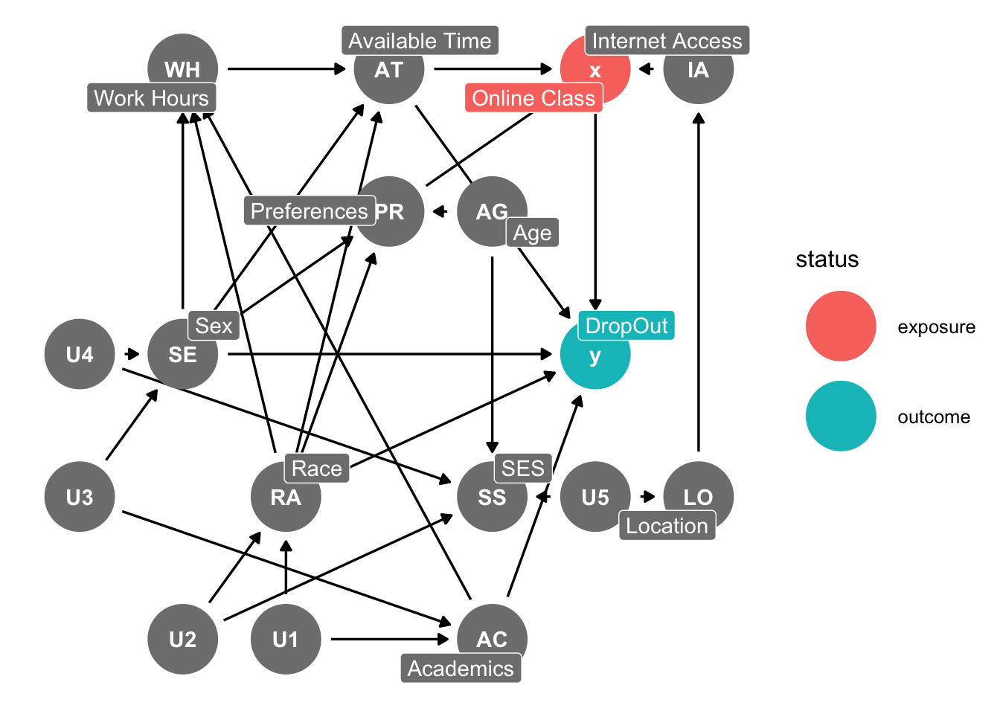
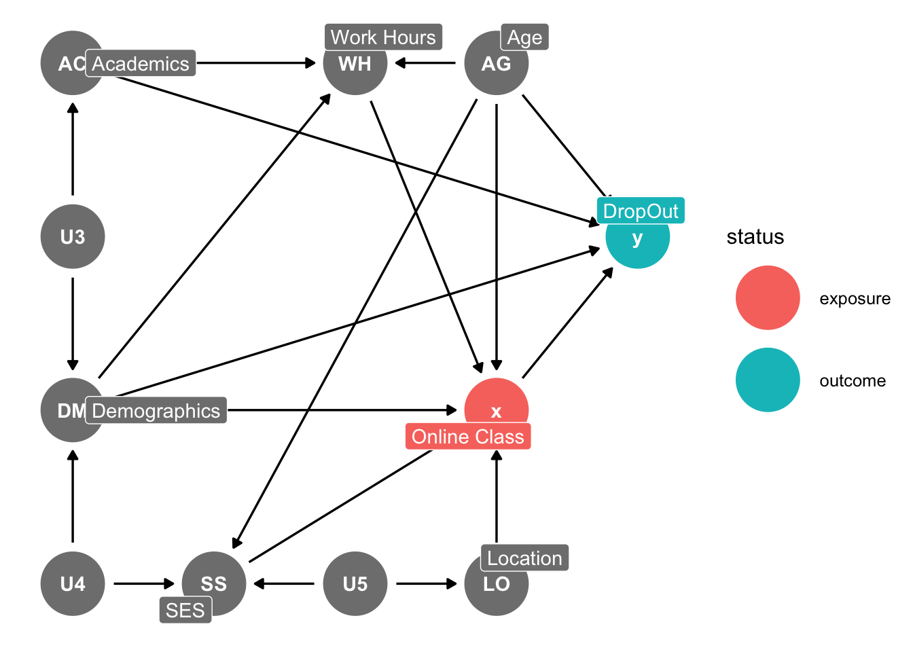
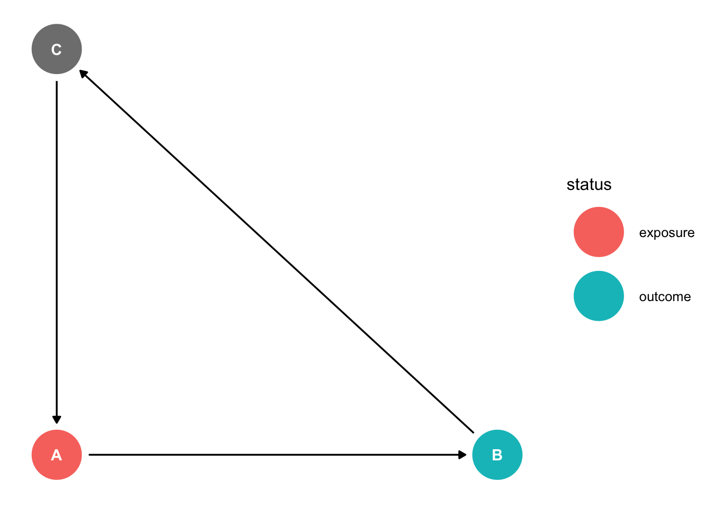
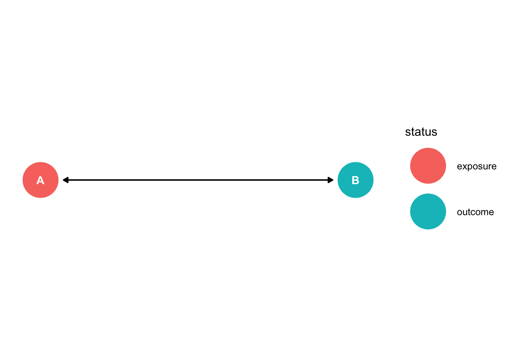
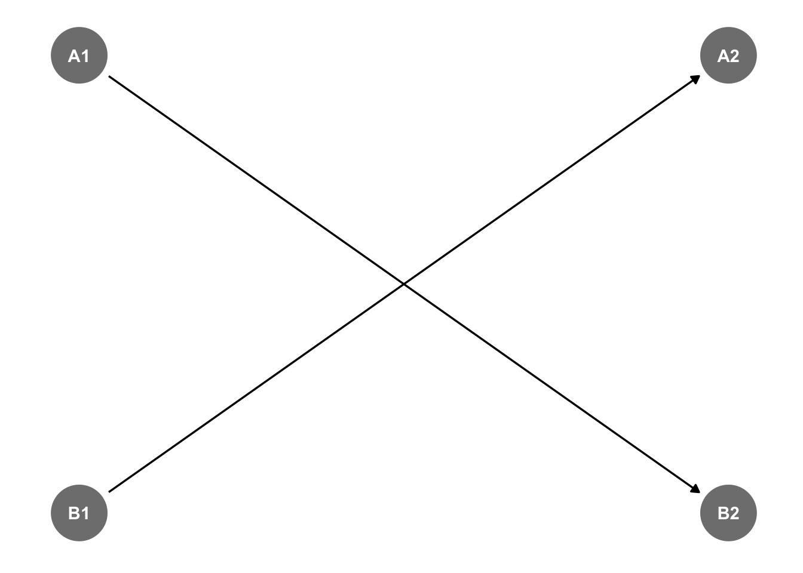

Chapter 2 Developing a DAG
Causal diagrams represent the data generation process that creates the data that we observe (Huntington-Klein, 2022). We need to think through this process and jot down all of the potential nodes and pathways. Next, we need to simpify the process to see what is relevant
2.1 Relevant Variables in the Data Generation Process
Our focus of the directed acyclic graph (DAG) is to include everything relevant to our research question of interest into the DAG. Huntington-Klein (2022) uses the example of online classes (treatment) and dropping out (outcome).
Our treatment will be Online Class and our outcome will be Dropout

What else should we includee?
- Demographics
- Race
- Sex/Gender
- Age
- Socioeconomic Status
- Available Time
- Work Hours
- Internet Access
- Academics
- Location
- Unobservables
- Preferences
For our direction of our arrows among our covariates, treatment, and outcomes.
- Online Classes cause Drop Outs
- Prefernces cause Online Classes
- Race causes Preferences, DropOut, Available Time, Work Hours, and Unobservable causes Race to be related Academics and SES
- Sex causes Preferences, DropOut, Available Time, Work Hours, and Unobservable causes Sex to be related to Academics and SES
- Age causes Preferences, DropOut, Available Time, and Work Hours
- SES causes Preferences, DropOut, Internet Access, Available Time, and Work Hours
- Available Time causes Online Classes and DropOut
- Work Hours cause Available Time
- Internet Access cause Online Classes
- Academics cause DropOut, Work Hours, Unobservable cause Academics to be related to Race and Sex 11 Location causes Internet Access, Unobservable causes Location related to SES

So our first DAG is complicated and a bit of the mess. However, we have thought through the data generation process.
2.2 Simplify
The data generation process is complex, and developing a complex DAG will prevent you and the reader from understanding the data generation process. So, we should determine what is helpful and what is unhelpful in the data generation process. Simplification is a balancing process. We want to have a clear and concise DAG, but simultaneously we want a DAG that represents the data generation process (Huntington-Klein, 2022).
- Unimportant
- Redundancy
- Mediators
- Irrelevance
Unimportant: If you include a variable that is likely small or has unimportant effects, then you probably can leave it out of your DAG.
- What about having a quiet cafe nearby? This be enticing for someone wanting to take an online class, but it is likely irrelevant, unimportant, or maybe in Location or Preferences
Redundancy: If there are any variables in your DAG within the same space, such that they have arrows coming in or going out of to or from the same variable, then we can combine (e.g.: race and ethnicity, sex \(\rightarrow\) SES).
- There may be some redundancies that we can eliminate to simplify our DAG. Since Sex and Race have similar arrows going to Work Hours, Available Time, Preferences, and DropOut, we can combine these into one node for simplicity and call it Demographics
Mediators: If there is a mediator in your DAG that is only there as a way from treatment to affect outcome. Such that, our mediator, \(B\), in \(A \rightarrow B \rightarrow C\) is the only away for \(A\) to affect \(C\), then we can drop \(B\) and only include \(A \rightarrow C\).
Preferences appears to be a mediator among Age, Race, Sex, and SES onto Online Classes. We can just have our four factors affect Online Classes directly.
Internet Access is also a mediator along the path of \(Location \rightarrow InternetAccess \rightarrow OnlineClassess\), and it is not a variable of interest in our research design. Therefore, we can drop it for simplification.
Work Hours affects Online Classes through Available Time. However, we can simplify and have Work Hours affect Online Classes directly. While Academics does not directly affect Available Time, it does affect it through Work Hours, so this won’t be a problem.
Irrelevance: Some variables are relevant for the data generation process, but not for our research design. If a variable is not on either a front door path or back door path, then we can likely remove this variable from the DAG.

2.3 No Cylces
In the name is “acyclic”, which means there are no cycles. You should not start at one path and end up back where you started (Huntington-Klein, 2022). Why? Because, we will never be able to identify the causal effect.
Examples where we cannot identify the causal effect due to cycles:
- \(A \rightarrow B \rightarrow A\)
- \(A \rightarrow B \rightarrow C \rightarrow A\)
Problematic! Stuck in a loop.
dag3<-dagify(B ~ A, C ~ B, A ~ C,exposure="A",outcome="B",
coords=list(x=c(A=0,B=1,C=0),
y=c(A=0,B=0,C=1)))
ggdag_status(dag3)+theme_dag()
Problematic! Stuck in a loop.
dag3<-dagify(B ~ A, A ~ B, exposure="A",outcome="B",
coords=list(x=c(A=0,B=1),
y=c(A=0,B=0)))
ggdag_status(dag3)+theme_dag()
We cannot identify the causal effect in either scenario?
2.3.1 Solution
We can add a time dimension and the cycle is now gone. The arrows will now move in only one direction (Huntington-Klein, 2022).
dag3<-dagify(B2 ~ A1, A2 ~ B1,
coords=list(x=c(A1=0,B1=0,A2=1,B2=1),
y=c(A1=1,B1=0,A2=1,B2=0)))
ggdag_status(dag3)+theme_dag()
Here we have \(A_{t} \rightarrow \ B_{t+1}\) and \(B_{t} \rightarrow A_{t+1}\), and we do not get stuck in a loop.
We can also add an instrument of exogenous variation to break the cycle, as well (Huntington-Klein, 2022).
2.4 Our Assumptions
What we do not show on our directed acyclic graph shows our assumptions. We cannot show everything in the data generation process, due to irrelevance, simplicification, etc. Our assumptions may not be dicotomous, such that are assumption are completely true or completely false. Our assumptions are likely true or likely false. It is our job to convince readers that our assumptions are true or our assumptions hold (Huntington-Klein, 2022).